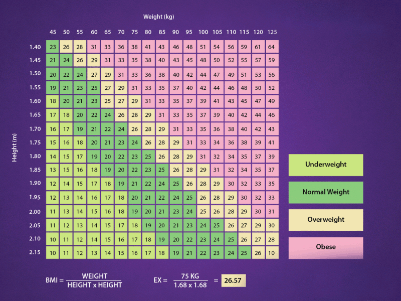

BMI (Body Mass Index) atau Indeks Massa Tubuh adalah ukuran sederhana untuk menilai apakah berat badan seseorang sehat berdasarkan tinggi badannya. Kalkulator BMI membantu pengguna mengetahui kategori berat badannya, mulai dari kurang berat badan hingga obesitas.
KALKULATOR BMI
FORM INFORMATION
Indeks Massa Tubuh (BMI) adalah alat sederhana yang digunakan untuk mengukur lemak tubuh berdasarkan berat badan dan tinggi seseorang. BMI digunakan untuk mengkategorikan seseorang ke dalam beberapa kelompok seperti kekurangan berat badan, berat badan normal, kelebihan berat badan, dan obesitas. Meskipun BMI bermanfaat sebagai indikator awal untuk mengevaluasi status berat badan, penting diingat bahwa BMI tidak mempertimbangkan komposisi tubuh, seperti proporsi otot dan lemak, atau faktor lain seperti usia, jenis kelamin, dan tingkat kebugaran. Oleh karena itu, BMI sebaiknya dilengkapi dengan evaluasi kesehatan lebih menyeluruh untuk mendapatkan gambaran kesehatan yang lebih akurat.
Rumus BMI adalah membagi berat badan dalam kilogram dengan kuadrat tinggi badan dalam meter.
Rumus BMI: BMI = Berat Badan (kg) / Tinggi Badan (m)2
Kategori BMI
- Di bawah 18.5: Kurang berat badan
- 18.5 – 24.9: Berat badan normal
- 25 – 29.9: Kelebihan berat badan
- 30 – 34.9: Obesitas kelas 1
- 35 – 39.9: Obesitas kelas 2
- 40 ke atas: Obesitas kelas 3 (morbid)
Tabel Penjelasan Kategori BMI
| Kategori | BMI |
|---|---|
| Berat badan kurang | < 18.5 |
| Normal | 18.5 - 24.9 |
| Kelebihan berat badan | 25 – 29.9 |
| Obesitas kelas (1 & 2) | 30 - 39.9 |
| Obesitas Ekstrem (kelas 3) | 40 |
BMI (Body Mass Index) Charts
HASIL
Hasil BMI Anda akan terlihat disini
Tips Kesehatan
Kekurangan Berat Badan (BMI < 18,5)
BMI di bawah 18,5 mengindikasikan bahwa seseorang berada dalam kategori kekurangan berat badan. Hal ini dapat disebabkan oleh berbagai faktor, termasuk malnutrisi, gangguan makan, atau masalah kesehatan lainnya. Risiko Kesehatan: Orang yang kekurangan berat badan memiliki risiko lebih tinggi mengalami anemia, kekurangan nutrisi penting, osteoporosis, sistem imun yang lemah, serta gangguan pertumbuhan pada anak-anak dan remaja.
Tips :
- Makan Makanan Kaya Nutrisi: Pastikan pola makan mencakup karbohidrat sehat, protein, lemak sehat, serta sayuran dan buah-buahan.
- Frekuensi Makan Lebih Sering: Konsumsi makanan dalam porsi kecil tapi lebih sering dalam sehari, seperti 5-6 kali makan.
- Olahraga untuk Membangun Otot: Latihan kekuatan, seperti angkat beban, dapat membantu meningkatkan massa otot.
- Cukup Istirahat: Tidur yang cukup membantu proses regenerasi dan pertumbuhan otot.
Berat Badan Normal (BMI 18,5 – 24,9)
BMI dalam rentang ini menunjukkan bahwa seseorang memiliki berat badan yang dianggap sehat untuk tinggi badannya. Ini berarti tubuh berada dalam keseimbangan yang baik antara lemak dan massa tubuh. Keuntungan Kesehatan: Memiliki berat badan normal dikaitkan dengan risiko lebih rendah untuk berbagai penyakit kronis seperti penyakit jantung, diabetes tipe 2, dan tekanan darah tinggi.
Tips :
- Pertahankan Pola Makan Seimbang: Pastikan konsumsi makanan tetap seimbang dengan nutrisi yang mencakup semua kelompok makanan.
- Aktif Secara Fisik: Lakukan aktivitas fisik setidaknya 150 menit per minggu, seperti jogging, bersepeda, atau berenang.
- Hidrasi yang Cukup: Minum air setidaknya 8 gelas sehari untuk menjaga keseimbangan cairan tubuh.
- Pantau Berat Badan Secara Berkala: Memastikan berat badan tetap stabil dapat membantu menjaga kesehatan jangka panjang.
Kelebihan Berat Badan (BMI 25 – 29,9)
BMI dalam kategori ini menunjukkan bahwa seseorang memiliki lebih banyak lemak tubuh daripada yang diinginkan. Ini sering menjadi tanda bahwa gaya hidup perlu diubah untuk menghindari peningkatan risiko kesehatan. Risiko Kesehatan: Orang dengan kelebihan berat badan memiliki risiko lebih tinggi untuk mengalami hipertensi, penyakit jantung, diabetes tipe 2, serta gangguan pernapasan.
Tips :
- Kendalikan Porsi Makan: Mengurangi porsi makanan membantu menyeimbangkan asupan kalori.
- Tingkatkan Aktivitas Fisik: Kombinasi latihan kardio dan kekuatan dapat membantu membakar kalori lebih efektif.
- Hindari Makanan Olahan: Pilih makanan segar dan hindari makanan yang tinggi gula dan lemak trans.
- Tidur yang Cukup: Kurang tidur dapat mempengaruhi hormon yang mengatur rasa lapar.
Obesitas (BMI 30 ke atas)
BMI di atas 30 menunjukkan bahwa seseorang masuk dalam kategori obesitas, yang menandakan jumlah lemak tubuh berlebih yang signifikan. Risiko Kesehatan: Obesitas meningkatkan risiko penyakit serius seperti penyakit jantung koroner, stroke, diabetes tipe 2, osteoarthritis, serta berbagai jenis kanker.
Tips :
- Konsultasi dengan Profesional Kesehatan: Mendapatkan bantuan dari dokter atau ahli gizi untuk merancang program penurunan berat badan yang aman dan efektif.
- Pola Makan yang Sehat: Fokus pada diet yang tinggi serat seperti sayuran, buah-buahan, biji-bijian, dan protein rendah lemak.
- Tetapkan Target yang Realistis: Penurunan berat badan yang aman adalah sekitar 0,5 hingga 1 kg per minggu.
- Aktivitas Fisik Teratur: Mulailah dengan aktivitas ringan seperti berjalan kaki, lalu perlahan tingkatkan intensitasnya.
BMI adalah alat yang bermanfaat untuk memberikan gambaran umum tentang status berat badan seseorang, namun tidak mempertimbangkan faktor-faktor seperti massa otot dan distribusi lemak. Oleh karena itu, hasil BMI harus diinterpretasikan bersama dengan evaluasi kesehatan yang lebih mendalam oleh tenaga medis. Tips di atas dapat membantu memulai pola hidup sehat dan menjaga kesehatan tubuh secara keseluruhan. Perubahan kecil dalam gaya hidup sehari-hari dapat berdampak besar dalam menjaga atau memperbaiki status kesehatan. Untuk penilaian kesehatan yang lebih akurat, disarankan untuk berkonsultasi dengan profesional medis atau ahli gizi.